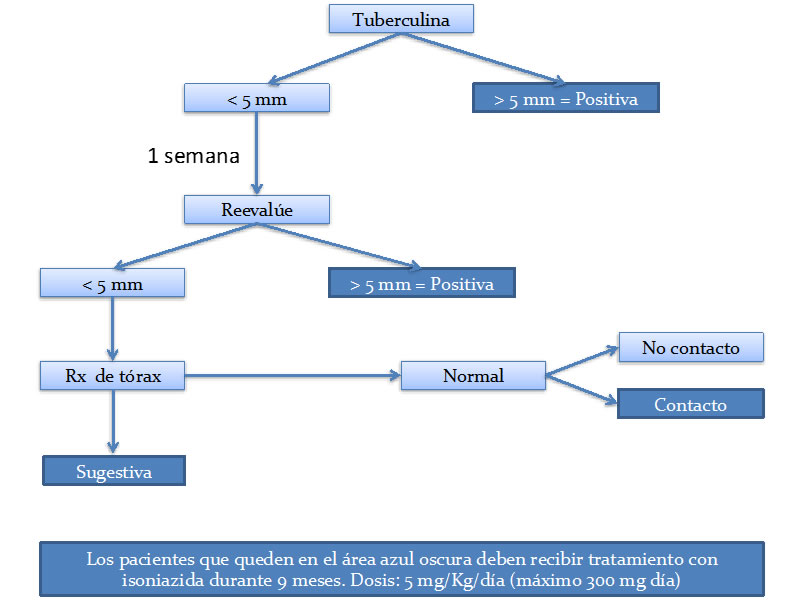

<div class="pages">
	<div data-page="projects" class="page no-toolbar no-navbar">
		<div class="page-content">
			<div class="navbarpages">
				<div class="nav_left_logo"><a href="index.html"></a></div>
				<div class="nav_right_button"><a href="menu.html"></a><a href="#" class="back" data-force="true"></a></div>
			</div>
			<div id="pages_maincontent">
				<h2 class="page_title">Aspectos de interés en infecciones e inmunizaciones</h2>
				<div class="page_content">
					<blockquote>Tuberculosis</blockquote>
					<p>La tuberculosis es una enfermedad que históricamente ha representado un verdadero problema de salud pública, en especial en países en vías de desarrollo. El advenimiento de las terapias biológicas ha puesto especial interés en el cuidado de los pacientes con respecto a este tipo de enfermedad infecciosa. La mayoría de los pacientes infectados con Myobacterium tuberculosis presentan infección latente, más que la forma activa de la enfermedad, por lo que se hace importante la identificación y tratamiento de los pacientes con tuberculosis latente para controlar la progresión a tuberculosis activa. El tratamiento inmunosupresor con medicamentos como prednisolona a dosis mayor o igual a 15 mg día durante al menos un mes o con terapias biológicas, en especial anti TNF, generan un riesgo significativo de tuberculosis por lo que está recomendado el tamizaje para tuberculosis en pacientes en quienes se planee el uso de este tipo de terapias.</p>
					<p><strong>Definición de tuberculosis latente:</strong> Estado persistente de viabilidad del bacilo, control inmune del mismo, en ausencia de manifestaciones clínicas de tuberculosis activa </p>
					<p><strong>Epidemiología de la tuberculosis latente:</strong> Se estima que aproximadamente una tercera parte de la población mundial (alrededor de dos billones de personas) tiene infección latente por M. Tuberculosis. En pacientes con AR, el dato de la prevalencia cambia de acuerdo a la población estudiada. En un estudio reciente en Argentina, se documentó tuberculosis  latente en 12,4% de una cohorte de pacientes con AR. </p>
					<h3>Factores de riesgo para tuberculosis latente y condiciones en las que se debe considerar estudiar para tuberculosis latente:</h3>
					<ul class="simple_list">
						<li>Supresión de a inmunidad celular por infección por VIH</li>
						<li>Uso de inhibidores del factor de necrosis tumoral</li>
						<li>Tratamiento con glucocorticoides</li>
						<li>Trasplante de órgano solido o hematopoyético</li>
						<li>Enfermedad renal crónica terminal</li>
						<li>Silicosis y exposición a sílice</li>
						<li>Personas que tuvieron contacto con una persona con tuberculosis</li>
						<li>Pacientes con modificaciones fibróticas en una radiografía de tórax congruente con tuberculosis previa</li>
						<li>Usuarios de drogas inyectables</li>
						<li>Residentes y empleados en congregaciones de alto riesgo (prisioneros, profesionales de la salud, asilos para individuos sin hogar).</li>
						<li>Inmigrantes recientes (menos de 5 años) de países con alta prevalencia</li>
					</ul>
					<p>Detección de tuberculosis latente: No hay un método perfecto para la detección de este tipo de entidad. La evaluación se puede hacer mediante tuberculina o con prueba en sangre para tuberculosis como el ensayo de liberación de interferón gama (IGRA). La tuberculina es el método diagnóstico mas empleado en el mundo, dado su bajo costo y accesibilidad en varios países, sin embargo tiene una baja especificidad entre pacientes que han sido vacunados con el bacilo de Calmette-Guérin (BCG) y tiene poca sensibilidad en pacientes inmunocomprometidos. El IGRA mide la respuesta in vitro de células T o células mononucleares de sangre periférica a antígenos de M. Tuberculosis  que no son encontrados en la BCG  ni en la mayoría de las micobacterias no tuberculosas, por lo que su especificidad es mayor que la tuberculina, sin embargo, recientes estudios en trabajadores de la salud de los Estados Unidos mostraron una mayor tasa de falsas conversiones (de negativo a falso positivo) y reversiones (de positivo a falso negativo) en IGRA mas que en tuberculina. Para completar el estudio del paciente con sospecha de tuberculosis latente debe realizarse adicionalmente una radiografía de tórax.</p>
					<p>El flujograma diagnóstico sugerido por la Asociación Española de Reumatología se muestra a continuación: </p>
					<a rel="gallery-3" href="images/flujograma.jpg" title="Flujograma: Detección de tuberculosis latente" class="swipebox"></a>
					<p><i>Algoritmo para la detección de tuberculosis latente mediante el uso de tuberculina sugerido por la Asociación Española de Reumatología. Los Cuadros azules oscuros indican una situación clínica en la cual se requiere tratamiento con isoniazida</i></p>
					<p><strong>Tratamiento de tuberculosis latente:</strong> El principal objetivo del tratamiento de tuberculosis latente es prevenir la progresión a enfermedad activa. Como primera medida, debe descartarse clínica y radiológicamente tuberculosis activa. El tratamiento de elección es isoniazida por 9 meses o como alternativa rifampicina durante 4 meses.</p>
					<p>Los puntos de corte y situaciones clínicas específicas para considerar positiva la prueba de tuberculina y por ende, definir el tratamiento con isoniazida, se resumen en la siguiente tabla:</p>
					<ul class="responsive_table">
						<li class="table_row">
							<div class="table_section_14">Punto de corte</div>
							<div class="table_section_70">Condiciones en las que se considera positiva la prueba de tuberculina</div>
						</li>
						<li class="table_row">
							<div class="table_section_14">≥ 5 mm</div>
							<div class="table_section_70"> Personas infectadas con el virus de inmunodeficiencia humana.<br/>
								Contactos recientes con pacientes con TB.<br/>
								Personas con cambios fibróticos en rayos X de tórax congruentes con TB previa.<br/>
								Personas con transplante de organos.<br/>
								Pacientes inmunocomprometidos (prednisolona > 15mg día por mes).<br/>
								Pacientes que reciben bloqueadores del factor de necrosis tumoral.<br/>
							</div>
						</li>
						<li class="table_row">
							<div class="table_section_14">≥ 10 mm</div>
							<div class="table_section_70"> Inmigrantes recientes (menos de 5 años) de países con alta prevalencia de TB.<br/>
								Usuarios de drogas inyectables.<br/>
								Personal de laboratorio de micobacteriología.<br/>
								Redidentes y empleados de los siguientes ambientes de alto riesgo:
								<ul>
									<li>Prisiones</li>
									<li>Hogares y otras instalaciones para la tercera edad</li>
									<li>Hospitales y otras instancias de salud</li>
									<li>Instalaciones residenciales para pacientes con SIDA</li>
									<li>Asilos para personas sin hogar</li>
								</ul>
								Personas con las siguientes afecciones:
								<ul>
									<li>Silicosis</li>
									<li>Diabetes mellitus</li>
									<li>Insuficiencia renal crónica</li>
									<li>Afecciones hematologicas como leucemia o linfoma</li>
									<li>otras afecciones malignas especificas como:
										<ul>
											<li>Cancer de cabaza y cuello o pulmonar</li>
											<li>Pérdida de peso > 10kg del peso corporal ideal</li>
											<li>Gastrectomía</li>
											<li>Derivacion yeyunoileal</li>
										</ul>
									</li>
								</ul>
							</div>
						</li>
						<li class="table_row">
							<div class="table_section_14">≥ 15 mm</div>
							<div class="table_section_70">Personas sin factores de riesgo conocidos para TB </div>
						</li>
					</ul>
					<p>Puntos de corte y condiciones clínicas especificas en las cuales se considera positiva la prueba de tuberculina. TB: tuberculosis. SIDA: síndrome de inmunodeficiencia adquirida</p>
					<h3>Lecturas recomendadas</h3>
					<ol class="simple_list">
						<li>Getahun H, et al. Latent Mycobacterium tuberculosis infection. M Eng J Med 2015;372:2127-35</li>
						<li>Horsburgh CR, et al. Latent tuberculosis infection in the United States. 2011;364:1441-8</li>
						<li>Chan J, et al. The immunological aspects of latency in tuberculosis. Clinical immunology 2004;110:2-12</li>
					</ol>
					<ul class="features_list">
						<li><a href="cont_espondilitis.html"><span>Ant - Espondilitis anquilosante</span></a></li>
						<li><a href="cont_hepatitis.html"><span>Sig - Hepatitis</span></a></li>
					</ul>
					<a href="menu.html" class="button_full">Menú principal</a> </div>
			</div>
		</div>
	</div>
</div>

